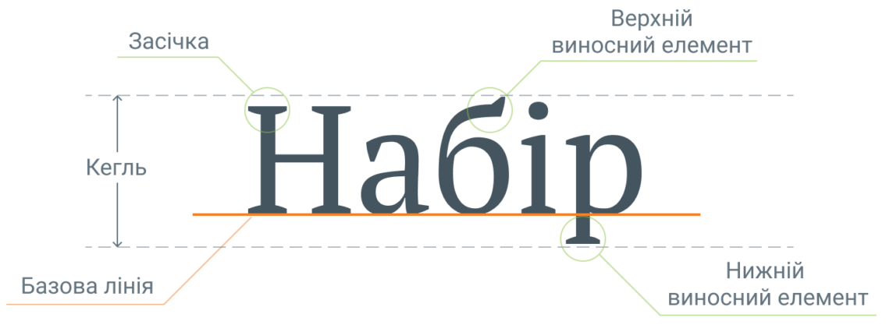
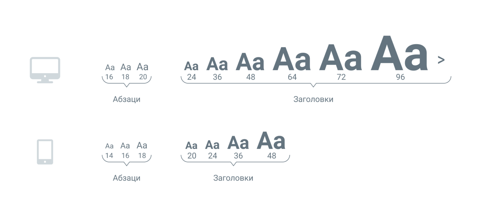

← На головну | Головні правила типографіки

Кегль — визначає площину розміщення знаків по висоті — від нижньої точки літери «р» до верхньої точки літери «б».
У друкованих виданнях розміри шрифтів вимірюються в пунктах (pt), а на екрані – в пікселях (px). Співвідношення розмірів обчислюється за формулою:
12 пунктів (pt) × (96/72) = 16 пікселів (px)
Оптимальний кегль для сайтів — 16–20 px (для комп'ютерів) та 14–18 px (для телефонів), а для друкованих виробів — 10–12 pt.

Трекінг — це рівномірна зміна відстаней між символами у всьому текстовому блоці. В словах, що набрані великим кеглем, варто зменшити відстані між літерами - так слова в рядку стають цілісними. Трекінг в тексті малих кеглів потрібно збільшити, щоб полегшити візуальне сприйняття тексту.
Кернінг — коригування відстані між окремою парою знаків. Сучасні шрифти уже мають налагоджений кернінг, тому немає потреби налаштовувати кернінг окремих літер. Кернінг налаштовують у графічному дизайні та при верстці друкованих виробів.
Х-висота – висота від основи літер до верху, що визначається по літері х (ікс). Для текстів на сайті використовують більшу X-висоту, для підвищення розбірливості літер малих кеглів.
Інтерліньяж — відстань між базовими лініями сусідніх рядків в тексті.
Міжрядковий інтервал — відстань від базової лінії до верхньої частини малих літер на наступному рядку.
Для тексту на сайті, розміри інтерліньяжу в абзацах — 120-170%. Зазвичай, інтерліньяж підбирається дизайнером на око, але рекомендований інтерліньяж — 150%, в цьому випадку рядки не розпадаються, але добре відділені, а текст залишається читабельним.
© 2026 Kotliarenko Bogdan | КН-24, СТФК НУХТ |